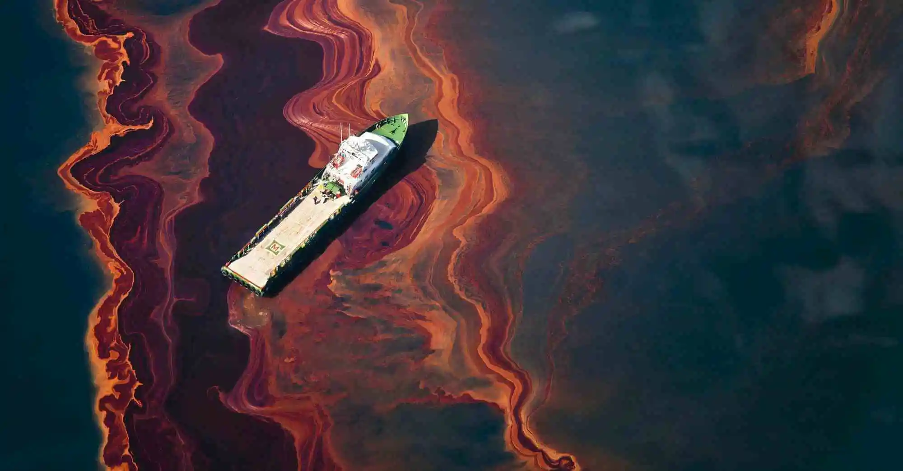

Human activity has resulted in the pollution of marine ecosystems worldwide. Oil spills are an example of pollution caused by humans. Hair is an environmentally friendly material that soaks up to 5 times its weight in oil! Use Rozxie's kelp hair to collect as much oil as you can! The active portion of her hair has a round circle around it.
Score: 0